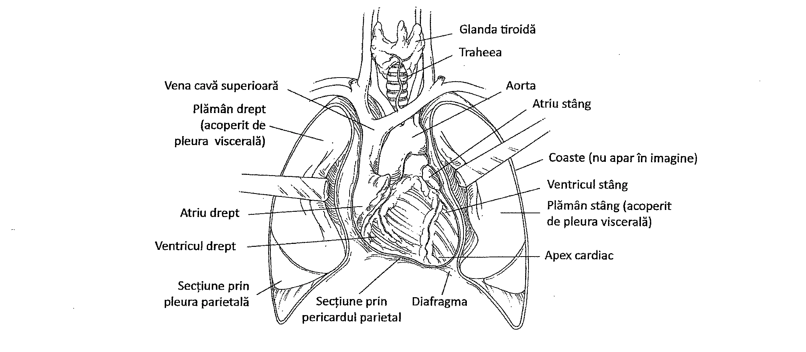
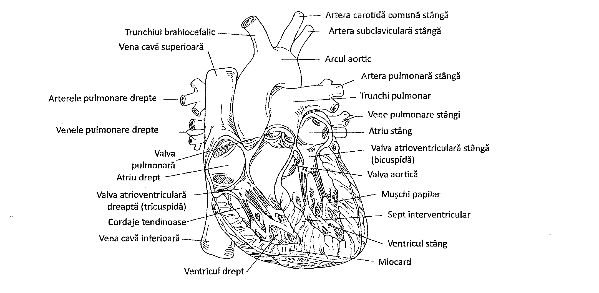
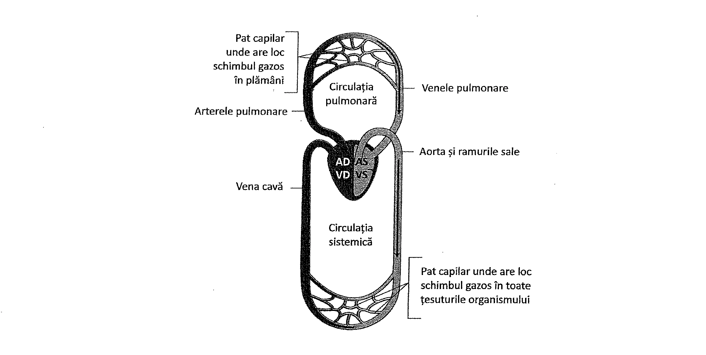
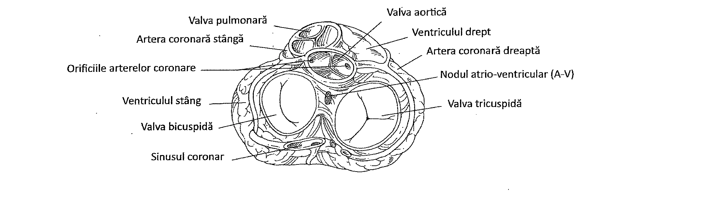
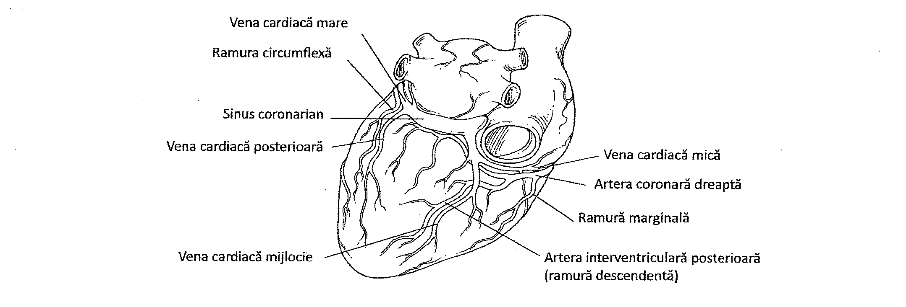
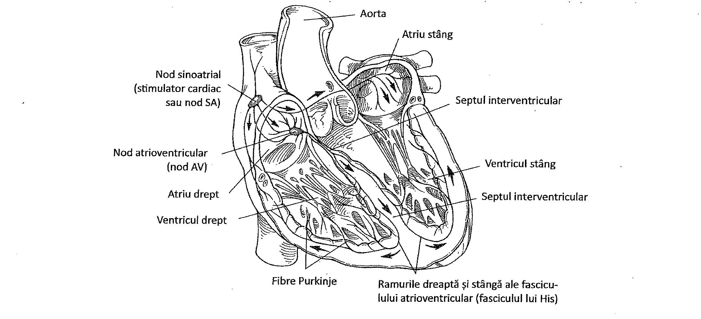
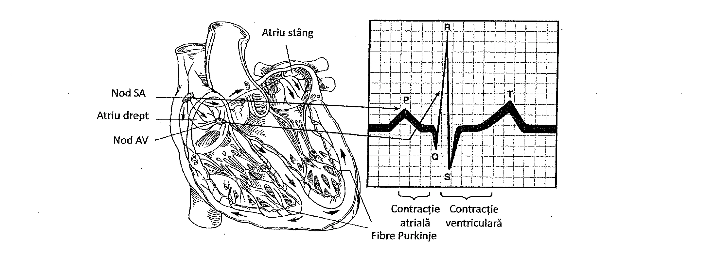
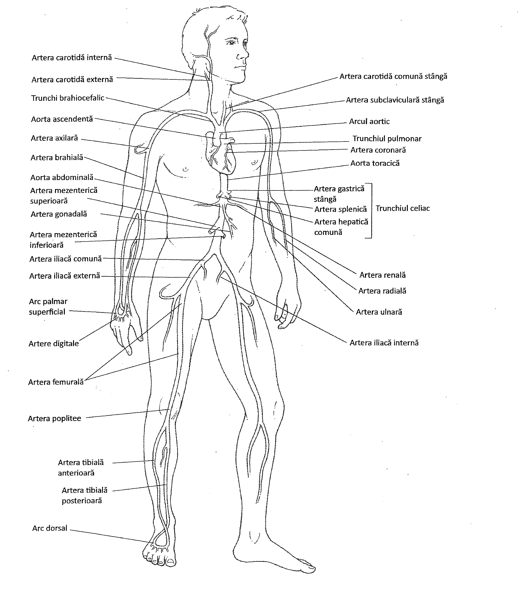
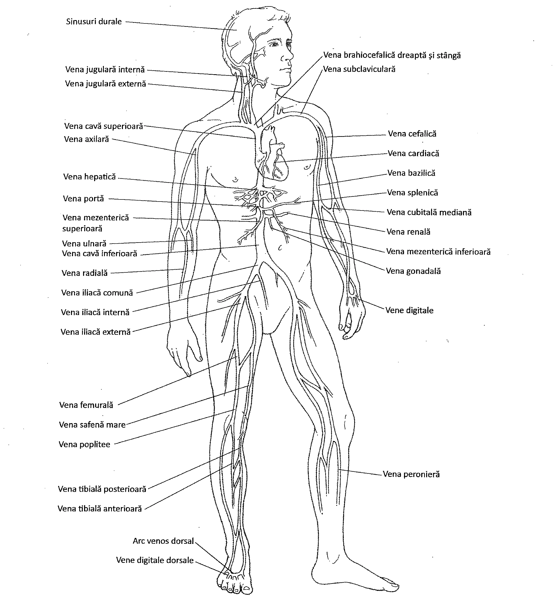
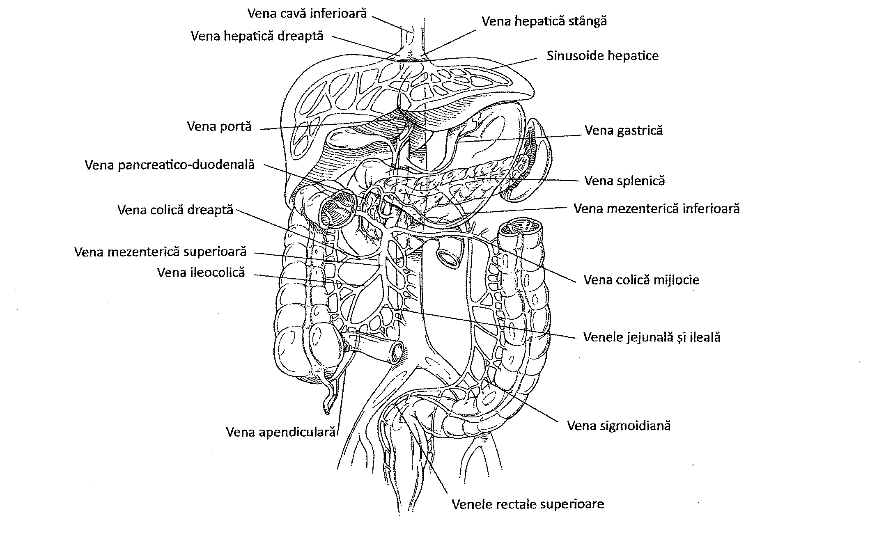

15.1. Inima
Sistemul cardiovascular este responsabil de furnizarea nutrienților și a oxigenului către țesuturi și de îndepărtarea produșilor de metabolism din țesuturi. De asemenea, sistemul transportă hormonii înspre celulele lor țintă. Sistemul cardiovascular este alcătuit dintr-o pompă (inima) și un set de tuburi care transportă sângele (vasele de sânge). Practic, toate regiunile organismului sunt deservite de sistemul cardiovascular.
Inima
Inima este organul ce îndeplinește funcția de pompă în sistemul cardiovascular. Este alcătuită din două cavități principale cu rol de pompă, ventriculele, și două cavități de umplere, numite atrii. Inima pompează sângele în arterele, capilarele și venele sistemului cardiovascular și furnizează sânge tuturor celulelor organismului. Are aproximativ mărimea unui pumn, este un organ cavitar, de formă conică și cântărește mai puțin de o jumătate de kilogram.
Inima este situată în torace, în mediastin, aproximativ între a doua și a cincea coastă. Se află anterior de coloana vertebrală și posterior de stern, fiind flancată de plămâni, care se suprapun peste ea. Inima este așezată puțin spre stânga și adoptă o poziție oblică în cavitatea toracică (Figura 15.1).

Inima este învelită de un sac format din două foițe (membrane) numit pericard. Foița externă se numește pericard parietal, iar cea internă, pericard visceral sau epicard. Cavitatea pericardică este spațiul umplut cu fluid dintre pericardul parietal și cel visceral (epicardul). Epicardul este ocazional acoperit de grăsime, mai ales la vârste înaintate. Inflamația pericardului este numită pericardită. Epicardul este considerat stratul extern al țesutului cardiac.
Țesutul principal al inimii este localizat în stratul mijlociu, și este numit miocard. Miocardul este compus din celule musculare de tip cardiac dipuse în fascicule. În interiorul miocardului, celulele musculare sunt interconectate între ele prin fibre fine de țesut conjunctiv aranjate într-o rețea, ce aparțin scheletului fibros. Această rețea consolidează miocardul în interior. Un plus de susținere, în jurul valvelor și la locul de emergență a vaselor mari, este asigurat de inele de țesut fibros împletit asemănător unor frânghii.
Al treilea strat al inimii este cel intern, numit endocard. Endocardul este alcătuit dintr-un strat endotelial ce acoperă un strat subțire de țesut conjunctiv. Endocardul delimitează cavitățile inimii și acoperă valvele cardiace. Inflamația valvelor cardiace este numită endocardită.
15.2. Cavitățile și vasele inimii
În inimă există patru cavități. Cele două cavități superioare sunt denumite atrii, iar cele două cavități inferioare sunt denumite ventricule.
Cavitățile cardiace sunt separate longitudinal de un perete numit sept cardiac. Între atrii, septul este denumit sept interatrial, iar între ventricule sept interventricular (Figura 15.2).

Atriile sunt cavitățile de umplere cu sânge ale inimii. Sângele care se întoarce prin vene de la țesuturi intră în atrii și este menținut acolo până când ventriculele se golesc. Fiecare atriu are o prelungire plată, încrețită, denumită auriculă (urechiușă), ce se umple cu sânge atunci când atriul este plin. Auricula crește capacitatea atrială.
În atriul drept se golesc trei vene: vena cavă superioară, care aduce sângele de la cap și gât, vena cavă inferioară, care aduce sângele din regiunea inferioară a corpului, și sinusul coronarian care primește sângele de la mușchiul cardiac și îl conduce apoi în atriul drept. Atriul stâng primește sânge de la plămâni prin intermediul venelor pulmonare.
Ventriculele sunt situate inferior față de atrii și sunt cavitățile cu rol de pompă ale inimii. Ventriculul drept pompează sângele la plămâni, iar ventriculul stâng pompează sângele la organele, țesuturile și celulele organismului.
15.3. Circulația sângelui prin inimă
În organism există două circuite cardiovasculare principale. Primul circuit, numit circulația pulmonară, se extinde de la inimă la plămâni și înapoi la inimă. Al doilea circuit, circulația sistemică, se extinde de la inimă la celule și înapoi la inimă (Figura 15.3).

Circulația pulmonară începe în partea dreaptă a inimii. Sângele colectat de la organe intră în atriul drept. Acest sânge este sărac în oxigen și bogat în dioxid de carbon. Sângele trece printr-o valvă din atriul drept în ventriculul drept. Ventriculul drept pompează apoi sângele în plămâni prin arterele pulmonare. La nivel pulmonar, dioxidul de carbon părăsește sângele și intră în alveolele pulmonare, în timp ce oxigenul trece din alveolele pulmonare în sânge. Apoi, sângele bogat în oxigen se întoarce prin venele pulmonare în partea stângă a inimii, închizând astfel circulația pulmonară.
Circulația sistemică începe în partea stângă a inimii. Sângele intră în atriul stâng, apoi trece printr-o valvă în ventriculul stâng. Ventriculul stâng pompează sângele bogat în oxigen în aortă, cea mai mare arteră din organism. Din aortă sângele este distribuit către alte artere ale circulației sistemice. Prin aceste artere, sângele circulă către cap, torace, regiunea abdominală și alte părți ale organismului.
La nivel celular, sângele eliberează oxigenul și preia dioxidul de carbon. Sângele bogat în dioxid de carbon (și sărac în oxigen) se întoarce la inimă prin venele din sistemul cardiovascular și venele cave. Când ajunge la inimă, sângele intră în atriul drept, completând în acest fel circulația sistemică.
15.4. Valvele cardiace
Un set de valve cardiace asigură circulația unidirecțională a sângelui prin inimă, prevenind refluxul. Patru valve cardiace sunt implicate în acest proces. Două dintre aceste valve sunt denumite valve atrioventriculare, iar celelalte două sunt denumite valve semilunare (Figura 15.4)

Una dintre valvele atrioventriculare este situată în partea dreaptă a inimii, între atriul și ventriculul drept. Această valvă este numită valva tricuspidă, deoarece are trei cuspisuri. A doua valvă atrioventriculară se află în partea stângă a inimii, între atriul și ventriculul stâng. Este numită valvă mitrală sau valvă bicuspidă, deoarece are numai două cuspisuri. Valvele atrioventriculare permit sângelui să curgă din atrii în ventricule și previn refluxul sângelui în atrii atunci când ventriculele se contractă.
Valvele cardiace atrioventriculare sunt ancorate de mușchii papilari ai peretelui ventricular prin cordoane de colagen de culoare albicioasă. Aceste cordoane tisulare, numite cordaje tendinoase, împiedică mișcarea cuspisurilor valvulare înspre atrii. Când cordajele tendinoase sunt lezate sau când leziunea este chiar la nivel valvular, valvele au tendița de a se mișca retrograd. În cazul valvei mitrale, această afecțiune se numește prolaps de valvă mitrală.
Cele două valve semilunare se află la emergența arterelor principale (aorta și artera pulmonară) din ventricule.. Valva pulmonară delimitează intrarea în trunchiul pulmonar, ce se extinde de la ventriculul drept spre plămâni. Această valvă previne refluxul sângelui în ventriculul drept când acesta se relaxează. Valva aortică este situată la emergența aortei. Ea previne refluxul sângelui în ventriculul stâng (Tabelul 15.1).
| Valva | Localizare | Funcție |
|---|---|---|
| Valva tricuspidă | Între atriul drept și ventriculul drept | Previne refluxul sângelui din ventriculul drept înapoi în atriul drept în timpul contracției ventriculare |
| Valva pulmonară | Între ventriculul drept și artera pulmonară | Previne refluxul sanguin din artera pulmonară în ventriculul drept în timpul relaxării ventriculare |
| Valva bicuspidă (mitrală) | Între atriul stâng și ventriculul stâng | Previne refluxul sângelui din ventriculul stâng înapoi în atriul stâng în timpul contracției ventriculare |
| Valva aortică | Între ventriculul stâng și aortă | Previne refluxul sângelui din aortă înapoi în ventriculul stâng în timpul relaxării ventriculare |
15.5. Circulația coronariană
Deoarece inima se află într-o activitate continuă, ea trebuie alimentată permanent cu sânge. Arterele care îi furnizează sânge sunt arterele coronare; vasele care drenează mușchiul cardiac sunt venele cardiace. Arterele coronare furnizează sânge oxigenat mușchiului cardiac; ulterior, sângele sărac în oxigen este drenat de către venele cardiace, îl conduc în sinusul coronarian (Figura 15.5). Sinusul trimite sângele în atriul drept.

Obstrucția prelungită a arterelor coronare prin cheaguri de sânge se numește tromboză coronariană. Această afecțiune poate produce moartea celulelor miocardice. Când celulele miocardice mor, apare infarctul miocardic, cunoscut și sub numele de atac de cord.
15.6. Mușchiul cardiac
Din punct de vedere fiziologic și biochimic, mușchiul cardiac este asemănător mușchiului striat scheletic. O diferență structurală este, însă, notabilă: celulele mușchiului striat scheletic sunt alungite și cilindrice, în timp ce celulele miocardului sunt mai scurte, mai late, mai ramificate, și interconectate. Joncțiunile dintre celulele musculare cardiace apar la nivelul unor conexiuni numite discuri intercalare. Discurile intercalare conțin multe joncțiuni de tip gap, care permit citoplasmei unei fibre musculare cardiace să comunice cu cea a fibrei învecinate. Discurile intercalare conțin și desmozomi, care formează o legătură mai strânsă decât joncțiunile de la nivelul celulelor musculare scheletice. Astfel, celulele miocardului funcționează ca niște unități mai integrate decât celulele musculare scheletice.
Celulele musculare cardiace primesc energie din metabolism în același fel ca și cele musculare scheletice, însă au nevoie de mai multă energie deoarece activitatea lor metabolică este mai intensă.
Contracțiile celulelor musculare cardiace nu sunt inițiate de impulsuri venite de la sistemul nervos. Inima inițiază și distribuie impulsuri pentru a determina contracția celulelor miocardice printr-un țesut specializat, denumit țesut excitoconductor. Celulele sistemului excitoconductor se depolarizează și se repolarizează pe tot parcursul vieții unei persoane fără intervenția sistemului nervos. Prima componentă a sistemului excitoconductor constă din celulele nodului sinoatrial (SA). Această masă de celule musculare cardiace prevăzute cu autoritmicitate este situată în peretele superior al atriului drept. Impulsurile generate de nodul sinoatrial ajung, în cele din urmă, în toată inima. Nodul SA determină ritmul contracțiilor cardiace, de aceea este cunoscut ca stimulator cardiac (pace-maker) (Figura 15.6). Nodul SA se depolarizează, fără intervenție nervoasă, de 70-80 de ori pe minut. Unda de depolarizare inițiată în nodul SA stabilește ritmul sinusal.
Impulsurile sunt distribuite de la nodul SA în țesutul atrial de la celulă la celulă, prin intermediul joncțiunilor gap din discurile intercalare. Impulsurile se răspândesc prin fibre la al doilea nod principal al inimii, numit nodul atrioventricular (AV). Nodul atrioventricular este situat în septul interatrial (între cele două atrii). Impulsurile care ajung la nodul AV se transmit unui grup mai voluminos de fibre, cunoscut sub numele de fasciculul His, situat în septul interventricular. Acesta este format din două ramuri, dreaptă și stângă, ce se continuă cu fibrele Purkinje, care se distribuie în miocardul ventricular, asigurând transmiterea impulsurilor necesare contracției acestuia. Potențialele de acțiune ale inimii urmează procesul de depolarizare și repolarizare tipic tuturor celulelor musculare (Capitolul 8).
Transmiterea impulsului prin sistemul conductor al inimii poate fi înregistrată prin electrocardiogramă (ECG). Pe o electrocardiogramă normală se disting trei unde care apar în fiecare ciclu cardiac. Prima undă, unda P, este o undă ascendentă care indică depolarizarea atriilor și distribuirea impulsului de la nodul SA, prin atrii, spre nodul AV, determinând contracția atrială. A doua undă este complexul QRS, alcătuit dintr-o undă descendentă, urmată de o undă ascendentă largă și apoi de o undă descendentă. Acest complex reflectă depolarizarea ventriculelor. Apoi urmează o deflexiune rotunjită, numită unda T. Aceasta reprezintă repolarizarea ventriculară (Figura 15.7).


Deși stimularea externă nu este necesară pentru activitatea cardiacă, sistemul nervos autonom poate realiza un controlul nervos asupra inimii. Impulsurile sistemului nervos simpatic cresc frecvența bătăilor cardiace și contracția ventriculară, iar sistemului nervos parasimpatic le diminuă (Capitolul 11).
Deși ritmul cardiac este de obicei regulat, pot să apară dereglări. Acestea se numesc aritmii. Când inima se contractă rapid și neregulat, se spune că fibrilează, afecțiune numită fibrilație. Pentru a defibrila inima poate fi utilizat un șoc electric puternic.
15.7. Ciclul cardiac
Alternanța contracțiilor și relaxărilor cavităților cardiace reprezintă ciclul cardiac. Termenul sistolă se referă la contracțiile inimii; termenul diastolă se referă la perioadele de relaxare ale inimii. Prin urmare, ciclul cardiac este alcătuit din sistolă și diastolă.
În timpul sistolei ventriculare (sângele este pompat afară), atriile sunt în diastolă și se umplu cu sânge. Când presiunea sângelui în atrii o depășește pe cea din ventricule, forța exercitată de sânge asupra valvelor atrioventriculare determină curgerea acestuia în ventricule. Presiunea sanguină în ventricule crește, iar în timpul contracției sângele curge fie în artera pulmonară, fie în aortă. Cantitatea de sânge pompată de un ventricul în timpul fiecărei sistole este numită volum bătaie. Cantitatea de sânge pompată de un ventricul pe minut se numește debit cardiac.
Inima bate de aproximativ 70-75 de ori pe minut, iar un ciclu cardiac are o durată mai mică de o secundă. Deoarece volumul bătaie la un adult este în medie de aproximativ 70 ml de sânge, debitul cardiac mediu este de aproximativ 5250 ml de sânge pe minut. Circulația sanguină este controlată de modificările de presiune, iar sângele va curge prin orice orificiu disponibil.
Când valvele atrioventriculare se închid, inima emite un zgomot, reprezentat prin onomatopeea „lub". Acesta este primul zgomot cardiac. Apoi, sângele curge prin artera pulmonară și aortă, iar valvele semilunare se închid. Acest sunet este descris onomatopeic prin „dub". Astfel, zgomotele cardiace sunt descrise ca „lub-dub". Zgomotele cardiace anormale, numite sufluri, indică de obicei o afecțiune a valvelor. Zgomotele cardiace pot fi ascultate cu ajutorul stetoscopului.
15.8. Vasele sanguine
Vasele sanguine formează o rețea de tuburi care transportă sângele dinspre inimă către celulele și țesuturile organismului și invers. Acestea reprezintă un element esențial al sistemului cardiovascular, deoarece asigură mediul necesar pentru îndeplinirea funcțiilor celulelor sanguine.
Vasele care transportă sângele de la inimă sunt denumite artere. Arterele se divid în vase mai mici numite arteriole care, la nivelul organelor și țesuturilor, se ramifică în vase microscopice numite capilare. Sângele din capilare deservește țesuturile. Capilarele părăsesc apoi mediul celular și formează vene mici numite venule. Venulele se unesc cu alte venule pentru a forma vase mai mari, venele, care transportă sângele înapoi la inimă. (Tabelul 15.2).
Toate vasele sanguine, cu excepția capilarelor, au în componența peretelui trei straturi distincte. Aceste straturi se numesc tunici. Ele înconjoară lumenul vaselor de sânge. Tunica interioară care căptușește lumenul vascular este tunica internă. Acest înveliș este alcătuit dintr-un strat subțire endotelial, format din epiteliu simplu pavimentos așezat pe o membrană bazală. O continuare a endoteliului, cunoscută sub denumirea de endocard, căptușește inima și acoperă valvele cardiace. Stratul mijlociu este tunica medie, alcătuită în principal din celule musculare netede și fibre elastice aparținând țesutului conjunctiv. Stratul exterior al vaselor de sânge este tunica externă. Principalul tip de țesut al acestui strat este format dintr-o țesătură laxă de fibre de colagen. Fibrele protejează vasele sanguine și asigură fixarea lor de țesuturile învecinate.
| Vasul | Structura | Funcția |
|---|---|---|
| Artera | Perete gros, rezistent, cu trei straturi – stratul endotelial, stratul mijlociu, format din celulele musculare netede și țesut elastic, și stratul extern, format din țesut conjunctiv | Transportă sângele la presiune ridicată de la inimă la arteriole |
| Arteriola | Perete mai subțire decât arterele, dar tot cu trei straturi; arteriolele mai mici au endoteliu, câteva celule musculare netede și o cantitate mică de țesut conjunctiv | Leagă arterele de capilare; ajută la controlul circulației sângelui în capilare prin vasoconstricție sau vasodilatație |
| Capilarul | Un singur strat de epiteliu pavimentos | Reprezintă o membrană semipermeabilă prin care se realizează schimburile de nutrienți, gaze și reziduuri între sânge și celulele din țesuturi; leagă arteriolele de venule |
| Venula | Perete subțire, cu mai puțin țesut muscular neted și elastic decât arteriolele | Leagă capilarele de vene |
| Vena | Perete mai subțire decât cel arterial, dar cu straturi similare; stratul mijlociu mai slab dezvoltat; unele au valve | Transportă sângele la presiune mică de la venule la inimă; valvele previn circulația retrogradă a sângelui; servesc drept rezervor de sânge |
Arterele
Spațiul central, gol, din interiorul arterelor se numește lumen, și este înconjurat de trei straturi de țesut. Tunica internă este alcătuită din epiteliu simplu pavimentos și este denumită endoteliu. Acest strat intern conține și țesut elastic. Tunica medie este alcătuită dintr-un strat gros de mușchi neted și din țesut elastic. Tunica externă este alcătuită în principal din fibre elastice și colagen.
Arterele au capacitatea de a se destinde și a se adapta la sângele ce pulsează în interiorul lor când inima se contractă. Această expansiune se datorează țesutului conjunctiv elastic. Când inima se relaxează, țesutul elastic revine la forma inițială și împinge sângele înainte.
Mușchiul neted din peretele arterelor se poate contracta pentru a regla fluxul sanguin în aval. Micșorarea lumenului arterial, numită vasoconstricție, poate fi indusă de impulsuri nervoase de la nivelul sistemului nervos simpatic. Mărirea în dimensiune a lumenului, numită vasodilatație, apare în absența impulsurilor de la acest sistem.
Arteriole, capilare și venule
Pereții arteriolelor mari sunt similari cu cei ai arterelor dar, pe măsură ce arteriolele scad în dimensiune, ele sunt alcătuite în principal din endoteliu și în mai mică măsură din mușchi neted. Ca și arterele, arteriolele suferă vasoconstricție și vasodilatație pentru a ajusta fluxul sanguin.
Capilarele, structuri microscopice, leagă arteriolele de venule. Capilarele pot fi întâlnite practic lângă fiecare celulă a organismului, în special cele care au o activitate metabolică crescută (aceste celule au nevoie de mai mult oxigen decât altele). Schimbul de nutrienți și gaze se produce între sânge și celulele corpului, transendotelial, după cum explică legea mișcării fluidelor a lui Starling (Capitolul 21). Pereții capilarelor au un singur strat de celule endoteliale, prin care moleculele mici pot să treacă cu ușurință. Sângele trece din arteriole în patul capilar, care este alcătuit din grupuri de mai multe capilare. Un sfincter precapilar reglează intrarea sângelui în patul capilar. Sfincterele sunt mușchi dispuși circular, care se deschid sau se închid pentru a regla fluxul sanguin în capilare, pentru a asigura țesuturilor necesarul de sânge.
Venulele se formează prin unirea mai multor capilare. Venulele colectează sângele și îl transportă în vene. Pereții venulelor mici sunt similari cu cei ai arteriolelor mici, dar venulele mari au aceeași structură ca și a venelor.
Venele
Venele au structură similară cu arterele, cu excepția faptului că tunica externă a venelor este mai groasă, iar tunica medie este mai subțire. Deoarece sângele care curge printr-o venă nu este sub presiune, curgerea sa este lină, în comparație cu sângele din artere, care pulsează. Deoarece sângele curge cu presiune mai mică, pereții venelor nu trebuie să fie atât de rezistenți ca cei ai arterelor.
Pentru a ajuta curgerea sângelui, multe vene prezintă pliuri ale stratului intern, care formează valve. Valvele previn refluxul sângelui venos, în special la nivelul membrelor inferioare (Figura 15.8). Când valvele slăbesc, sângele se scurge înapoi, iar presiunea sângelui dilată peretele venos. Venele dilatate se numesc vene varicoase. Înaintarea în vârstă, statul prelungit în picioare și sarcina contribuie la dezvoltarea venelor varicoase.
Venele servesc drept rezervoare de sânge, deoarece conțin o mare parte din sângele organismului. Aproximativ 60% din volumul sanguin se află în vene și venule.
Presiunea arterială și pulsul
Presiunea arterială reprezintă presiunea exercitată de sânge asupra pereților vasculari. Presiunea arterială este determinată de debitul cardiac (cu cât debitul cardiac este mai mare, cu atât presiunea arterială este mai mare), precum și de rezistența la fluxul sanguin. Aceasta apare datorită vâscozității sângelui, lungimii vaselor de sânge și a diametrului vaselor sanguine.
![Vasele sanguine și valvele. (a) Structura comparată a arterei, venei și capilarului. Se observă cele trei tunici care alcătuiesc peretele arterelor și al venelor; prin comparație, peretele capilarului este format dintr-un singur strat de celule, ce alcătuiește tunica internă. Pereții arterei sunt mai groși decât cei venoși, pentru a rezista la presiunea sângelui. (b) Arterele și capilarele nu au valve; valvele sunt prezente doar în vene. În venă, zona unde este situată valva (1) este dilatată. Valva se deschide când trece sângele (2), iar apoi lambourile valvei se unesc (3), închizând-o și împiedicând refluxul sângelui.](assets/images/chapters/sistemul-cardiovascular/figura-15-8.webp)
Presiunea arterială poate fi măsurată cu sfigmomanometrul, care conține o coloană de mercur (Hg) ce se ridică, odată cu presiunea din manșeta care se umflă la nivelul brațului, deasupra valorii de 160 mmHg când comprimă arterele. Apoi se folosește un stetoscop pentru a asculta curgerea sângelui în artera ulnară. Manșeta se dezumflă, până când se aud sunetele datorate curgerii turbulente, numite zgomotele lui Korotkoff. Acestea reprezintă presiunea sistolică (presiunea care apare în timpul sistolei), care în mod normal este de aproximativ 120 mmHg. În timpul diastolei, sângele continuă să exercite presiune asupra pereților vasculari, iar zgomotele Korotkoff încă se mai aud. Se dezumflă manșeta până când nu se mai aud zgomotele Korotkoff și se notează presiunea la care ele dispar. Această presiune, presiunea diastolică, este suficientă pentru a ridica coloana de mercur la aproximativ 80 mmHg. Prin urmare, presiunea arterială medie a unei persoane, poate fi exprimată ca presiune sistolică „per" presiune diastolică, sau „120/80". Numeroase afecțiuni pot crește sau scădea presiunea arterială. De exemplu, îngustarea lumenului arterial poate crește semnificativ presiunea arterială.
Ventriculul stâng al inimii se contractă și se relaxează, împingând sângele în artere și determinând pulsul, o undă de presiune în artere. Pulsul este mai puternic în apropierea inimii și mai slab pe măsură ce sângele se îndepărtează de inimă. În mod obișnuit pulsul se măsoară la nivelul arterei radiale, la încheietura mâinii, dar se poate măsura și pe artera carotidă și poplitee. Pulsul are aceeași frecvență cu cea cardiacă, iar media este de aproximativ 70-75 de bătăi pe minut. Un puls rapid reflectă o frecvență cardiacă rapidă, situație numită tahicardie. Un puls scăzut reflectă un ritm cardiac scăzut, situație numită bradicardie.
Volumul de sânge din circulație este de aproximativ cinci litri. O scădere a acestui volum, de exemplu datorită unei sângerări excesive, poate determina scăderea presiunii arteriale. Scăderea frecvenței cardiace poate determina de asemena scăderea presiunii arteriale, deoarece volumul de sânge pompat de inimă este mai mic.
15.9. Tipuri de circulație sanguină
După cum s-a amintit mai înainte, circulația sanguină este compusă din circulația pulmonară și cea sistemică. Principala arteră din circulația sistemică este aorta, iar principalele vene sunt vena cavă inferioară și superioară. Alte artere din corpul uman își au originea în aortă, imediat după emergența acesteia din ventriculul stâng, pe măsură ce se formează arcul aortic. Aici au originea arterele coronare, ce deservesc mușchiul cardiac, și arterele principale ale gâtului și capului.
După ce se arcuiește, aorta coboară de-a lungul coloanei vertebrale și dă naștere altor artere sistemice, care transportă sângele la organe. Figura 15.9 ilustrează localizarea mai multor artere importante, dintre care enumerăm arterele carotide ale gâtului, arterele subclaviculare ale umărului, arterele axilară, brahială, radială și ulnară ale membrului superior, arterele intercostale ale peretelui toracic, arterele frenice ale diafragmei, artera celiacă ce dă naștere arterelor gastrică stângă, splenică și hepatică, artera mezenterică superioară, care se extinde la intestinul subțire, arterele renale, la nivelul rinichilor, arterele iliace comune, la nivelul membrelor inferioare, și artera iliacă externă, care dă naștere arterelor femurală, poplitee și tibială.
După ce sângele a deservit celulele, capilarele îl conduc spre venule, vene și în cele din urmă în venele cave. Cele două vene cave aduc sângele în atriul drept. Figura 15.10 ilustrează principalele vene ale sistemului venos. Printre cele mai importante sunt venele jugulare ale gâtului, venele axilară, brahială, radială și ulnară din membrul superior, venele azygos și hemiazygos de la mușchii toracici, venele splenică, mezenterică inferioară și mezenterică superioară de la organele abdominale și venele iliace comune de la nivelul membrelor inferioare.


Circulația pulmonară transportă sângele din ventriculul drept la țesutul pulmonar și apoi în atriul stâng. Cele două artere pulmonare, ce provin din trunchiul pulmonar, pătrund în cei doi plămâni, iar după ce schimbul gazos s-a efectuat, capilarele se unesc pentru a forma venele pulmonare. Acestea părăsesc plămânii și duc sângele în atriul stâng. Arterele pulmonare sunt singurele artere care transportă sânge sărac în oxigen, iar venele pulmonare sunt singurele vene care transportă sânge bogat în oxigen.
În organism pot fi întâlnite și alte sisteme circulatorii. De exemplu, circulația cerebrală este alcătuită din numeroase vase care pornesc din poligonul lui Willis, o structură alcătuită din arterele mari de la baza encefalului. Arterele irigă encefalul, continuându-se cu vene, care părăsesc encefalul.
Un alt sistem circulator este sistemul port hepatic, care transportă sângele de la tractul gastrointestinal și splină către ficat (Figura 15.11). Circulația hepato-portală are loc într-o singură direcție. Scopul acesteia este să transporte nutrienți la ficat, pentru prelucrare. Principalul vas al circulației hepato-portale este vena portă, ce se formează în tractul gastrointestinal și merge spre ficat. După ce trece prin ficat, sângele pleacă prin venele hepatice, care apoi se unesc cu vena cavă inferioară. Sângele din sistemul port-hepatic este sărac în oxigen, deoarece a deservit tractul gastrointestinal. Pentru a asigura nutriția propriilor celule, ficatul primește sânge bogat în oxigen prin intermediul arterei hepatice, ramură a aortei.
